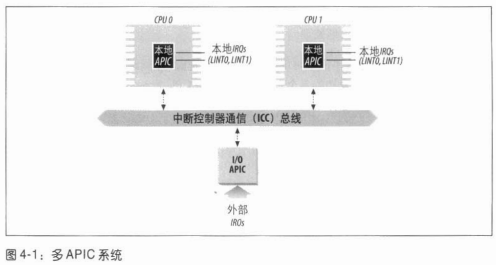
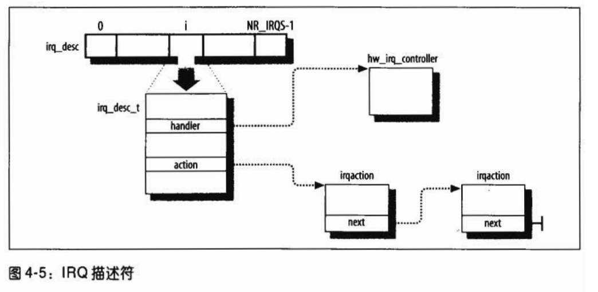

x86平台Linux中断机制
[toc]
基础知识
NMI不能被IF禁止，其中断向量号由系统固定分配。
外部中断一般可分为非屏蔽中断和可屏蔽中断。对于非屏蔽中断，cpu直接在对应的中断向量表中取得中断入口地址，执行中断处理程序。而对于可屏蔽中断，一般是用8259A等中断管理器来管理。cpu从中断管理器中得到一个中断请求时，会去检查一下中断允许标志IF，若IF为1则取出中断类型码，从中断向量表中取得中断入口地址，执行中断处理程序。若IF为0，cpu将不响应外部提出的中断请求。
IRQ : Interrupt ReQuest
PIC : Programmable Interrupt Controller 可编程中断控制器
向量：每个中断和异常，由0-255之间的数来标识，Intel把这个无符号的整数叫做向量（vector）
PIC的作用：
监视IRQ线，检查产生的信号。
如果有引发信号出现在IRQ线上：
a. 把接收到的引发信号转换成对应的向量。
b. 把这个向量存放在中断控制器的一个I/O端口，从而允许CPU通过数据总线读取此向量。
c. 把引发信号发送到处理器的INTR引脚，即产生一个中断。
d. 等待，直到CPU通过把这个中断信号写进可编程中断控制器的一个I/O端口来确认，这种情况发生时，清INTR线。返回第1步。
IRQ线从0开始编号，因此IRQn关联的Intel的缺省向量是n+32(CPU保留了一部分向量来处理异常)。可以通过向中断控制器端口发布合适的指令，修改IRQ和向量之间的映射，以及有选择的禁止或者激活相应的IRQ，此禁止只是告诉PIC暂时不向CPU发布此IRQ中断，而一旦此IRQ被再次激活，PIC又会发送此IRQ给CPU 。可屏蔽中断的全局屏蔽或者非屏蔽，由CPU的eflags寄存器的IF标志位决定，cli和sti指令分别清楚和设置该标志。
传统的PIC由两片8259A外部芯片级联组成，只能作为单处理器的PIC。在SMP体系结构中，中断需要传递给系统中的每个CPU，为此Intel从Pentiun III开始引入I/O高级可编程控制器（I/O Advanded Programmable Interrupt Controller, I/O APIC）用以代替老式的8259A PIC。
多APIC结构：APIC总线把“前端”I/O APIC连接到本地APIC。来自设备的IRQ线连接到I/O APIC，相对于本地APIC来说，I/O APIC起路由作用。 I/O APIC中的中断重定向表将每个外部IRQ信号转换为一条消息，然后，通过APIC总线发送给一个或多个CPU的本地APIC单元。多APIC系统还允许CPU产生处理器间中断（interprocessor interrupt, 简称IPI）。
目前大部分单处理器系统都包含一个I/O APIC芯片，可以用以下两种方式进行配置：
- 作为一种标准的8259A方式的外部PIC连接到CPU。本地APIC被禁止，LINT0和LINT1本地IRQ线分别配置为INTR和NMI引脚。
- 作为一种标准的I/O APIC。本地APIC被激活，且所有的外部中断都通过I/O APIC接收。

中断请求队列
由于硬件的限制，很多外部设备不得不共享中断线，例如，一些PC配置可以把同一条中断线分配给网卡和图形卡。由此看来，让每个中断源都必须占用一条中断线是不现实的。所以，仅仅中断描述符表并不能提供中断产生的所有信息，内核必须对中断线给出进一步的描述。在Linux设计中，专门为每个中断请求IRQ设置了一个队列，这就是我们所说的中断请求队列。
关于I/O APIC的一些更详细的资料
Linux kernel version : linux 2.6.30.4
基本数据结构
由于通用中断门是让多个中断源共享的，而且允许这种公用的结构在系统运行的过程中动态地变化，所以IDT的初始化阶段只是为每个中断向量，也即每个表项准备一个“中断请求队列”， 从而形成一个中断请求队列的数组，这就是数组irq_desc[]。
每个队列头部中除了action用来维持一个由中断服务程序描述项目构成的单链队列外，还有个指针handler指向另一个数据结构，即hw_interrupt_type数据结构，此结构主要是一些函数指针，用于该队列，或者该共用“中断通道”的控制，并不对具体的中断源服务。具体的函数取决于所用的中断控制器(比如 i8259A)。其中，函数指针enable和disable用于开启和关闭其所属的通道，ack用于对中断控制器的相应，而end则用于每次中断服务返回的前夕，这些函数都是在init_IRQ()函数中调用init_ISA_irqs()设置好的。 [这两段摘自《Linux内核源代码情景分析》3.3小节]

irq_desc_t
每个中断向量都有自己的irq_desc_t描述符，所有这些描述符组织在一起形成了irq_desc数组。
根据前一段书中的描述，irq_desc数组应该就是作者所说的中断请求队列数组，数组中的每一项即每一个struct irq_desc结构都描述一个“中断请求队列”，struct irqaction即中断服务程序构成的队列，队列中每一项都对应一个中断服务程序。hw_interrupt_type在较新版本的内核中被struct irq_chip取代，指代此中断通道的操作函数。
/*include/linux/irq.h*/
/**
* struct irq_desc - interrupt descriptor
* @irq: interrupt number for this descriptor
* @timer_rand_state: pointer to timer rand state struct
* @kstat_irqs: irq stats per cpu
* @irq_2_iommu: iommu with this irq
* @handle_irq: highlevel irq-events handler [if NULL, __do_IRQ()]
* @chip: low level interrupt hardware access
* @msi_desc: MSI descriptor
* @handler_data: per-IRQ data for the irq_chip methods
* @chip_data: platform-specific per-chip private data for the chip
* methods, to allow shared chip implementations
* @action: the irq action chain
* @status: status information
* @depth: disable-depth, for nested irq_disable() calls
* @wake_depth: enable depth, for multiple set_irq_wake() callers
* @irq_count: stats field to detect stalled irqs
* @last_unhandled: aging timer for unhandled count
* @irqs_unhandled: stats field for spurious unhandled interrupts
* @lock: locking for SMP
* @affinity: IRQ affinity on SMP
* @cpu: cpu index useful for balancing
* @pending_mask: pending rebalanced interrupts
* @threads_active: number of irqaction threads currently running
* @wait_for_threads: wait queue for sync_irq to wait for threaded handlers
* @dir: /proc/irq/ procfs entry
* @name: flow handler name for /proc/interrupts output
*/
struct irq_desc {
unsigned int irq;
struct timer_rand_state *timer_rand_state;
unsigned int *kstat_irqs;
#ifdef CONFIG_INTR_REMAP
struct irq_2_iommu *irq_2_iommu;
#endif
irq_flow_handler_t handle_irq;
struct irq_chip *chip; /*指向描述PIC对象的描述符*/
struct msi_desc *msi_desc;
void *handler_data;
void *chip_data; /* 指向PIC对象方法所使用的的数据 */
struct irqaction *action; /* IRQ action list */
unsigned int status; /* IRQ status */
unsigned int depth; /* nested irq disables */
unsigned int wake_depth; /* nested wake enables */
unsigned int irq_count; /* For detecting broken IRQs */
unsigned long last_unhandled; /* Aging timer for unhandled count */
unsigned int irqs_unhandled;
spinlock_t lock;
#ifdef CONFIG_SMP
cpumask_var_t affinity;
unsigned int cpu;
#ifdef CONFIG_GENERIC_PENDING_IRQ
cpumask_var_t pending_mask;
#endif
#endif
atomic_t threads_active;
wait_queue_head_t wait_for_threads;
#ifdef CONFIG_PROC_FS
struct proc_dir_entry *dir;
#endif
const char *name;
} ____cacheline_internodealigned_in_smp;
extern struct irq_desc irq_desc[NR_IRQS];
/* include/linux/cache.h */
#if !defined(____cacheline_internodealigned_in_smp)
#if defined(CONFIG_SMP)
#define ____cacheline_internodealigned_in_smp \
__attribute__((__aligned__(1 << (INTERNODE_CACHE_SHIFT))))
#else
#define ____cacheline_internodealigned_in_smp
#endif
#endif
/* struct irq_desc的status字段，描述IRQ线的一组状态 */
/* */
struct irq_desc irq_desc[NR_IRQS] __cacheline_aligned_in_smp = {
[0 ... NR_IRQS-1] = {
.status = IRQ_DISABLED,
.chip = &no_irq_chip,
.handle_irq = handle_bad_irq,
.depth = 1,
.lock = __SPIN_LOCK_UNLOCKED(irq_desc->lock),
}
};
irq_desc_t描述的depth字段和IRQ_DISABLED标志表示IRQ线是否被禁用。每次调用disable_irq()或者disale_irq_nosync()函数，depth字段的值增加，如果depth等于0，函数禁用IRQ线并设置它的IRQ_DISABLED标志相反，每当调用enable_irq()函数，depth字段的值减少，如果depth变为0，函数激活IRQ线并清除IRQ_DISABLED标志。
irq_chip
Linux支持多种PIC，为了以统一的方式处理所有这样的设备，Linux用了一个PIC对象，由PIC名字和七个PIC标准方法组成。定义PIC对象的数据结构叫做hw_interrupt_type（也叫作hw_irq_controller），后来被irq_chip取代，并添加了很多新的底层硬件操作函数。
/*include/linux/irq.h*/
/**
* struct irq_chip - hardware interrupt chip descriptor
*
* @name: name for /proc/interrupts
* @startup: start up the interrupt (defaults to ->enable if NULL)
* @shutdown: shut down the interrupt (defaults to ->disable if NULL)
* @enable: enable the interrupt (defaults to chip->unmask if NULL)
* @disable: disable the interrupt (defaults to chip->mask if NULL)
* @ack: start of a new interrupt
* @mask: mask an interrupt source
* @mask_ack: ack and mask an interrupt source
* @unmask: unmask an interrupt source
* @eoi: end of interrupt - chip level
* @end: end of interrupt - flow level
* @set_affinity: set the CPU affinity on SMP machines
* @retrigger: resend an IRQ to the CPU
* @set_type: set the flow type (IRQ_TYPE_LEVEL/etc.) of an IRQ
* @set_wake: enable/disable power-management wake-on of an IRQ
*
* @release: release function solely used by UML
* @typename: obsoleted by name, kept as migration helper
*/
struct irq_chip {
const char *name;
unsigned int (*startup)(unsigned int irq);
void (*shutdown)(unsigned int irq);
void (*enable)(unsigned int irq);
void (*disable)(unsigned int irq);
void (*ack)(unsigned int irq);
void (*mask)(unsigned int irq);
void (*mask_ack)(unsigned int irq);
void (*unmask)(unsigned int irq);
void (*eoi)(unsigned int irq);
void (*end)(unsigned int irq);
void (*set_affinity)(unsigned int irq,
const struct cpumask *dest);
int (*retrigger)(unsigned int irq);
int (*set_type)(unsigned int irq, unsigned int flow_type);
int (*set_wake)(unsigned int irq, unsigned int on);
/* Currently used only by UML, might disappear one day.*/
#ifdef CONFIG_IRQ_RELEASE_METHOD
void (*release)(unsigned int irq, void *dev_id);
#endif
/*
* For compatibility, ->typename is copied into ->name.
* Will disappear.
*/
const char *typename;
};
irqaction
多个设备能共享一个单独的IRQ，因此，内核要维护多个irqaction描述符，其中的每个描述符涉及一个特定的硬件设备和一个特定的中断。
/* include/linux/interrupt.h */
/**
* struct irqaction - per interrupt action descriptor
* @handler: interrupt handler function
* @flags: flags (see IRQF_* above)
* @mask: no comment as it is useless and about to be removed
* @name: name of the device
* @dev_id: cookie to identify the device
* @next: pointer to the next irqaction for shared interrupts
* @irq: interrupt number
* @dir: pointer to the proc/irq/NN/name entry
* @thread_fn: interupt handler function for threaded interrupts
* @thread: thread pointer for threaded interrupts
* @thread_flags: flags related to @thread
*/
struct irqaction {
irq_handler_t handler; /* 指向一个I/O设备的中断服务例程 */
unsigned long flags; /* 描述IRQ和I/O设备之间的关系 */
cpumask_t mask;
const char *name; /* I/O设备名，/proc/interrupts文件中显示 */
void *dev_id; /* I/O设备的私有字段，标识设备本身(设备号)或者其驱动程序 */
struct irqaction *next; /* 指向irqaction描述符链表的下一个元素，链表中的元素指向共享同一个IRQ的硬件设备 */
int irq; /* IRQ线 */
struct proc_dir_entry *dir; /* 指向IRQn相关的/proc/irq/n目录的描述符 */
irq_handler_t thread_fn;
struct task_struct *thread;
unsigned long thread_flags;
};
/* 中断服务函数类型 */
typedef irqreturn_t (*irq_handler_t)(int, void *);
中断初始化
x86平台中断初始化共分为以下几步：
- 中断描述符表的初步初始化
- 中断描述符表的最终初始化
trap_init()early_irq_init()init_IRQ()
IDT初步初始化
声明256个门描述符的
IDT表空间/* arch/x86/kernel/head_32.S */ idt_descr: .word IDT_ENTRIES*8-1 # idt contains 256 entries .long idt_table /* 这里相当于声明了一个结构体idt_descr，包含两个元素，一个数字和idt_table的地址 arch/x86/include/asm/desc.h:35:extern gate_desc idt_table[];声明idt_table是一个外部变量，即head_32.S中的idt_descr中的idt_table. idt_table表的内容被_set_gate() -> write_idt_entry()填充。 */ #define write_idt_entry(dt, entry, g) \ native_write_idt_entry(dt, entry, g) static inline void native_write_idt_entry(gate_desc *idt, int entry, const gate_desc *gate) { memcpy(&idt[entry], gate, sizeof(*gate)); } /* _set_gate()函数被set_xxxintr_gate()调用，用以设置中断门，陷阱门等。 函数被set_xxxintr_gate()函数主要在 start_kernel() ->trap_init() ->init_IQR() 被调用 */设置
IDTRis386: movl $2,%ecx # set MP 2: movl %cr0,%eax andl $0x80000011,%eax # Save PG,PE,ET orl %ecx,%eax movl %eax,%cr0 call check_x87 lgdt early_gdt_descr lidt idt_descr ljmp $(__KERNEL_CS),$1f 1: movl $(__KERNEL_DS),%eax # reload all the segment registers movl %eax,%ss # after changing gdt.
初始化256个门描述符
/* * setup_idt * * sets up a idt with 256 entries pointing to * ignore_int, interrupt gates. It doesn't actually load * idt - that can be done only after paging has been enabled * and the kernel moved to PAGE_OFFSET. Interrupts * are enabled elsewhere, when we can be relatively * sure everything is ok. * * Warning: %esi is live across this function. */ setup_idt: lea ignore_int,%edx movl $(__KERNEL_CS << 16),%eax movw %dx,%ax /* selector = 0x0010 = cs */ movw $0x8E00,%dx /* interrupt gate - dpl=0, present */ lea idt_table,%edi mov $256,%ecx rp_sidt: movl %eax,(%edi) movl %edx,4(%edi) addl $8,%edi dec %ecx jne rp_sidtlea指令 ： load effective address 功能是取偏移地址。
mov是将数据从源传到目的
lea是将源的地址传到目的
例如：
movl 18(%eax), %ebx #是将内存中（%eax+18）的内容传入%ebx中；
leal 18(%eax), %ebx #是将（18+（%eax中的值））即地址，传入%ebx;
代码中，lea idt_table, %edi #即将idt_table表的地址传到%edi中。
IDT最终初始化
- 异常：由函数trap_init()实现，被系统初始化入口函数start_kernel()调用；
- 中断：由函数init_IRQ()实现，被系统初始化入口函数start_kernel()调用；
trap_init()
此函数在x86平台linux系统调用章节已经分析过。
early_irq_init()
该函数用于初始化数组irq_desc[]；
/*
init/main.c->start_kernel()->early_irq_init()
early_irq_init()定义在kernel/irq/handle.c中，且针对不同的controller有不同的实现。
*/
/*
* Linux has a controller-independent interrupt architecture.
* Every controller has a 'controller-template', that is used
* by the main code to do the right thing. Each driver-visible
* interrupt source is transparently wired to the appropriate
* controller. Thus drivers need not be aware of the
* interrupt-controller.
*
* The code is designed to be easily extended with new/different
* interrupt controllers, without having to do assembly magic or
* having to touch the generic code.
*
* Controller mappings for all interrupt sources:
*/
int nr_irqs = NR_IRQS;
EXPORT_SYMBOL_GPL(nr_irqs);
#ifdef CONFIG_SPARSE_IRQ /*CONFIG_SPARSE_IRQ=y支持稀有的中断号*/
/* 暂时不看 */
#else
struct irq_desc irq_desc[NR_IRQS] __cacheline_aligned_in_smp = {
[0 ... NR_IRQS-1] = {
.status = IRQ_DISABLED,
.chip = &no_irq_chip,
.handle_irq = handle_bad_irq,
.depth = 1,
.lock = __SPIN_LOCK_UNLOCKED(irq_desc->lock),
}
};
static unsigned int kstat_irqs_all[NR_IRQS][NR_CPUS];
int __init early_irq_init(void)
{
struct irq_desc *desc;
int count;
int i;
init_irq_default_affinity();
printk(KERN_INFO "NR_IRQS:%d\n", NR_IRQS);
desc = irq_desc;
count = ARRAY_SIZE(irq_desc);
for (i = 0; i < count; i++) {
desc[i].irq = i;
init_alloc_desc_masks(&desc[i], 0, true);
desc[i].kstat_irqs = kstat_irqs_all[i];
}
return arch_early_irq_init();
}
struct irq_desc *irq_to_desc(unsigned int irq)
{
return (irq < NR_IRQS) ? irq_desc + irq : NULL;
}
struct irq_desc *irq_to_desc_alloc_cpu(unsigned int irq, int cpu)
{
return irq_to_desc(irq);
}
#endif /* !CONFIG_SPARSE_IRQ */
init_IRQ()
init/main.c->start_kernel()->init_IRQ()
/* early_irq_init()函数调用完紧接着就是init_IQR()函数 */
/*arch/x86/kernel/paravirt.c*/
void init_IRQ(void)
{
pv_irq_ops.init_IRQ();
}
/*pv_irq_ops的定义在arch/x86/kernel/paravirt.c*/
struct pv_irq_ops pv_irq_ops = {
.init_IRQ = native_init_IRQ,
.save_fl = __PV_IS_CALLEE_SAVE(native_save_fl),
.restore_fl = __PV_IS_CALLEE_SAVE(native_restore_fl),
.irq_disable = __PV_IS_CALLEE_SAVE(native_irq_disable),
.irq_enable = __PV_IS_CALLEE_SAVE(native_irq_enable),
.safe_halt = native_safe_halt,
.halt = native_halt,
#ifdef CONFIG_X86_64
.adjust_exception_frame = paravirt_nop,
#endif
};
/* 这里的调用关系搞不清楚是通过paravirt.c中的init_IRQ还是直接调用的irqinit_32.c中的init_IRQ然后再调用的native_init_IRQ, 通过irqinit_32.c中的注释：Overridden in paravirt.c 推断应该是直接调用的irqinit_32.c中的代码*/
/*arch/x86/kernel/irqinit_32.c*/
/* Overridden in paravirt.c */
void init_IRQ(void) __attribute__((weak, alias("native_init_IRQ")));
void __init native_init_IRQ(void)
{
int i;
/* Execute any quirks before the call gates are initialised: */
x86_quirk_pre_intr_init();
/*
* Cover the whole vector space, no vector can escape
* us. (some of these will be overridden and become
* 'special' SMP interrupts)
*/
for (i = FIRST_EXTERNAL_VECTOR; i < NR_VECTORS; i++) {
/* SYSCALL_VECTOR was reserved in trap_init. */
if (i != SYSCALL_VECTOR)
set_intr_gate(i, interrupt[i-FIRST_EXTERNAL_VECTOR]);
}
/*略*/
}
_attribute_((weak, alias("native_init_IRQ")));
weak 和 alias 分别是GNU扩展的两个属性。
weak 使得所修饰的符号在目标文件中作为 weak symbol 而不是 global symbol。用 nm 命令查看编译生成的目标文件可用看到所修饰的符号是一个 weak symbol，它前面的标记是 W。给函数加上weak属性时，即使函数没定义，函数被调用也可以编译成功。 若两个或两个以上全局符号（函数或变量名）名字一样，而其中之一声明为weak symbol（弱符号），则这些全局符号不会引发重定义错误。链接器会忽略弱符号，去使用普通的全局符号来解析所有对这些符号的引用，但当普通的全局符号不可用时，链接器会使用弱符号。当有函数或变量名可能被用户覆盖时，该函数或变量名可以声明为一个弱符号。
而 alias 为所修饰的符号定义一个别名，前边代码中init_IRQ是native_init_IRQ的一个别名，所定义的别名和原符号名必须在同一个编译单元中定义，如native_init_IRQ和init_IRQ在同一个.c文件中，否则会编译出错。
其中x86_quirk_pre_intr_init函数定义在arch/x86/kernel/setup.c中，主要调用了init_ISA_irqs函数完成中断控制器8259A的初始化。
/**
* x86_quirk_pre_intr_init - initialisation prior to setting up interrupt vectors
*
* Description:
* Perform any necessary interrupt initialisation prior to setting up
* the "ordinary" interrupt call gates. For legacy reasons, the ISA
* interrupts should be initialised here if the machine emulates a PC
* in any way.
**/
void __init x86_quirk_pre_intr_init(void)
{
if (x86_quirks->arch_pre_intr_init) {
if (x86_quirks->arch_pre_intr_init())
return;
}
init_ISA_irqs();
}
/* init_ISA_irqs函数定义在arch/x86/kernel/irqinit_32.c中 */
void __init init_ISA_irqs(void)
{
int i;
#ifdef CONFIG_X86_LOCAL_APIC
init_bsp_APIC();
#endif
init_8259A(0); // 完成8259A中断控制器的初始化
/*
* 16 old-style INTA-cycle interrupts:
*/
for (i = 0; i < NR_IRQS_LEGACY; i++) {
struct irq_desc *desc = irq_to_desc(i);
desc->status = IRQ_DISABLED;
desc->action = NULL;
desc->depth = 1;
set_irq_chip_and_handler_name(i, &i8259A_chip,
handle_level_irq, "XT");
}
/* for循环中初始化了16个 irq_desc_t描述符，*/
}
/* 其中 */
struct irq_chip i8259A_chip = {
.name = "XT-PIC",
.mask = disable_8259A_irq,
.disable = disable_8259A_irq,
.unmask = enable_8259A_irq,
.mask_ack = mask_and_ack_8259A,
};
handle_level_irq() 定义在 /kernel/irq/chip.c
/* /kernel/irq/chip.c" */
void
set_irq_chip_and_handler_name(unsigned int irq, struct irq_chip *chip,
irq_flow_handler_t handle, const char *name)
{
set_irq_chip(irq, chip); /* 设置chip */
__set_irq_handler(irq, handle, 0, name);
/* 设置handle
desc->handle_irq = handle;
desc->name = name;
*/
}
/* /kernel/irq/chip.c */
/**
* set_irq_chip - set the irq chip for an irq
* @irq: irq number
* @chip: pointer to irq chip description structure
*/
int set_irq_chip(unsigned int irq, struct irq_chip *chip)
{
struct irq_desc *desc = irq_to_desc(irq);
unsigned long flags;
if (!desc) {
WARN(1, KERN_ERR "Trying to install chip for IRQ%d\n", irq);
return -EINVAL;
}
if (!chip)
chip = &no_irq_chip;
spin_lock_irqsave(&desc->lock, flags);
irq_chip_set_defaults(chip);
desc->chip = chip;
spin_unlock_irqrestore(&desc->lock, flags);
return 0;
}
之后循环调用set_intr_gate函数，完成中断门的初始化。循环中的几个宏定义如下。
/*arch/x86/include/asm/irq_vectors.h*/
/*
* IDT vectors usable for external interrupt sources start
* at 0x20:
*/
#define FIRST_EXTERNAL_VECTOR 0x20
#define NR_VECTORS 256
# define SYSCALL_VECTOR 0x80
即初始化IDT从0x20开始的256个中断门，并跳过0x80。set_intr_gate函数定义在arch/x86/include/asm/desc.h中，定义如下。
/*
* This needs to use 'idt_table' rather than 'idt', and
* thus use the _nonmapped_ version of the IDT, as the
* Pentium F0 0F bugfix can have resulted in the mapped
* IDT being write-protected.
*/
static inline void set_intr_gate(unsigned int n, void *addr)
{
BUG_ON((unsigned)n > 0xFF);
_set_gate(n, GATE_INTERRUPT, addr, 0, 0, __KERNEL_CS);
}
/*
其中 GATE_INTERRUPT定义如下
arch/x86/include/asm/desc_defs.h"
enum {
GATE_INTERRUPT = 0xE,
GATE_TRAP = 0xF,
GATE_CALL = 0xC,
GATE_TASK = 0x5,
};
*/
简单总结native_init_IRQ函数主要完成两个工作，
- 初始化中断控制器；
- 初始化
struct desc主要是chip成员和handle_irq成员。
- 初始化
- 将
interrupt[]数组中的中断服务程序地址写进了IDT中。
interrupt[]的定义
参考的第二项：中断之中断向量表IDT的初始化，有对这段代码的注释以及解释。
/*arch/x86/kernel/entry_32.S*/
/*
* Build the entry stubs and pointer table with some assembler magic.
* We pack 7 stubs into a single 32-byte chunk, which will fit in a
* single cache line on all modern x86 implementations.
*/
.section .init.rodata,"a"
ENTRY(interrupt)
.text
.p2align 5
.p2align CONFIG_X86_L1_CACHE_SHIFT
ENTRY(irq_entries_start)
RING0_INT_FRAME
vector=FIRST_EXTERNAL_VECTOR
.rept (NR_VECTORS-FIRST_EXTERNAL_VECTOR+6)/7
.balign 32
.rept 7
.if vector < NR_VECTORS
.if vector <> FIRST_EXTERNAL_VECTOR
CFI_ADJUST_CFA_OFFSET -4
.endif
1: pushl $(~vector+0x80) /* Note: always in signed byte range */
CFI_ADJUST_CFA_OFFSET 4
.if ((vector-FIRST_EXTERNAL_VECTOR)%7) <> 6
jmp 2f
.endif
.previous
.long 1b
.text
vector=vector+1
.endif
.endr
2: jmp common_interrupt
.endr
END(irq_entries_start)
.previous
END(interrupt)
.previous
主要包含两行代码pushl $(~vector+0x80)和jmp common_interrupt,即把中断号减去256的结果保存到栈中，然后调用通用中断处理程序。之所以要减去256，是因为内核用负数表示所有的中断，正数表示系统调用。
.rept语法
.rept count Repeat the sequence of lines between the .rept directive and the next .endr directive count times. For example, assembling .rept 3 .long 0 .endr is equivalent to assembling .long 0 .long 0 .long 0
.IF、.ELSE、.ELSEIF 和 .ENDIF 伪指令使得程序员易于对多分支逻辑进行编码。它们让汇编器在后台生成 CMP 和条件跳转指令，这些指令显示在输出列表文件中。语法如下所示：
.IF conditionl statements [.ELSEIF condition2 statements ] [.ELSE statements ] .ENDIF
方括号表示 .ELSEIF 和 .ELSE 是可选的，而 .IF 和 .ENDIF 则是必需的。condition（条件）是布尔表达式，
数组中每个元素的初始值是标号1的地址。因此访问数组中的元素时，都会跳到标号1处，执行相应的指令。也就是，在除了0~19号和0x80号中断外，其余的所有中断在进入其自己的中断服务程序之前，必须是先条转执行common_interrupt的.
common_interrupt的定义
/*
* the CPU automatically disables interrupts when executing an IRQ vector,
* so IRQ-flags tracing has to follow that:
*/
.p2align CONFIG_X86_L1_CACHE_SHIFT
common_interrupt:
addl $-0x80,(%esp) /* Adjust vector into the [-256,-1] range */
SAVE_ALL
TRACE_IRQS_OFF
movl %esp,%eax
call do_IRQ
jmp ret_from_intr
ENDPROC(common_interrupt)
CFI_ENDPROC
保存寄存器的值以后，栈顶的地址被存放到eax寄存器，然后中断处理程序调用do_IRQ()函数，执行do_IRQ()的ret指令时，控制跳转到ret_from_intr()。
do_IRQ函数
/* arch/x86/kernel/irq.c */
/*
* do_IRQ handles all normal device IRQ's (the special
* SMP cross-CPU interrupts have their own specific
* handlers).
*/
unsigned int __irq_entry do_IRQ(struct pt_regs *regs)
{
struct pt_regs *old_regs = set_irq_regs(regs);
/* high bit used in ret_from_ code */
unsigned vector = ~regs->orig_ax; // 取得对应的中断向量
unsigned irq;
exit_idle();
irq_enter();
irq = __get_cpu_var(vector_irq)[vector];
if (!handle_irq(irq, regs)) { //调用中断处理句柄，对8259，就是handle_level_irq
#ifdef CONFIG_X86_64
if (!disable_apic)
ack_APIC_irq();
#endif
if (printk_ratelimit())
printk(KERN_EMERG "%s: %d.%d No irq handler for vector (irq %d)\n",
__func__, smp_processor_id(), vector, irq);
}
irq_exit();
set_irq_regs(old_regs);
return 1;
}
handle_irq
搜索发现此函数在arch/x86/kernel/irq_32.c"中定义
bool handle_irq(unsigned irq, struct pt_regs *regs)
{
struct irq_desc *desc;
int overflow;
overflow = check_stack_overflow();
desc = irq_to_desc(irq);
if (unlikely(!desc))
return false;
if (!execute_on_irq_stack(overflow, desc, irq)) {
if (unlikely(overflow))
print_stack_overflow();
desc->handle_irq(irq, desc);
/* 在这里调用了之前注册的handler_irq函数
init_ISA_irqs()
-> set_irq_chip_and_handler_name(i, &i8259A_chip,
handle_level_irq, "XT");
-> __set_irq_handler(irq, handle, 0, name);
-> desc->handle_irq = handle;
即handle_level_irq
-> handle_IRQ_event(irq, action);
-> do {
ret = action->handler(irq, action->dev_id);
action = action->next;
} while (action);
*/
}
return true;
}
注册中断
在Linux内核申请中断的函数是request_irq(),函数原型定义在include/linux/interrupt.h中，
request_irq(unsigned int irq, irq_handler_t handler, unsigned long flags,
const char *name, void *dev);
/*
irq : 要申请的硬件中断号；
handler : 中断服务函数指针；
flags: 中断处理的属性，
若设置了IRQF_DISABLED则表示是快速中断，快速中断在处理过程中会屏蔽其他中断。
若设置了IRQD_SHARED则表示多个设备共享此中断。
若设置了IRQF_SAMPLE_RANDOM则表示对系统产生随机数有作用。
IRQF_TRIGGER_* 其中*可以是中断触发方式，定义在include/linux/interrupt.h中。
name : 中断名字，/proc/interrupts文件系统中显示；
dev : 中断共享时可以用到，一般设置为这个设备的设备结构体或者NULL
返回值：
0 : 成功 ；
-INVAL : 表示中断号无效或处理函数指针为NULL ；
-EBUSY : 表示中断已经被占用且不能共享。
*/
关于request_irq()的最后一个参数dev
中断发生时，内核并不判断是共享中断线上的哪个设备产生了中断，它会循环执行所有该中断线上注册的所有中断服务函数（irqaction->handler函数）。因此irqaction->handler函数需要自己判断具体的中断源。很多资料都建议将设备结构指针作为此参数的值，当中断发生时，迅速根据硬件寄存器中的信息比照传入的dev参数判断是否是本设备发出的中断。而且free_irq()函数也需要据此判断从共享中断线上移除哪一个irqaction
代码流程
/*include/linux/interrupt.h*/
static inline int __must_check
request_irq(unsigned int irq, irq_handler_t handler, unsigned long flags,
const char *name, void *dev)
{
return request_threaded_irq(irq, handler, NULL, flags, name, dev);
}
extern void exit_irq_thread(void);
#else
extern int __must_check
request_irq(unsigned int irq, irq_handler_t handler, unsigned long flags,
const char *name, void *dev);
主要调用了request_threaded_irq()函数，此函数定义在kernel/irq/manage.c中，
/**
* request_threaded_irq - allocate an interrupt line
* @irq: Interrupt line to allocate
* @handler: Function to be called when the IRQ occurs.
* Primary handler for threaded interrupts
* @thread_fn: Function called from the irq handler thread
* If NULL, no irq thread is created
* @irqflags: Interrupt type flags
* @devname: An ascii name for the claiming device
* @dev_id: A cookie passed back to the handler function
*
* This call allocates interrupt resources and enables the
* interrupt line and IRQ handling. From the point this
* call is made your handler function may be invoked. Since
* your handler function must clear any interrupt the board
* raises, you must take care both to initialise your hardware
* and to set up the interrupt handler in the right order.
*
* If you want to set up a threaded irq handler for your device
* then you need to supply @handler and @thread_fn. @handler ist
* still called in hard interrupt context and has to check
* whether the interrupt originates from the device. If yes it
* needs to disable the interrupt on the device and return
* IRQ_THREAD_WAKE which will wake up the handler thread and run
* @thread_fn. This split handler design is necessary to support
* shared interrupts.
*
* Dev_id must be globally unique. Normally the address of the
* device data structure is used as the cookie. Since the handler
* receives this value it makes sense to use it.
*
* If your interrupt is shared you must pass a non NULL dev_id
* as this is required when freeing the interrupt.
*
* Flags:
*
* IRQF_SHARED Interrupt is shared
* IRQF_DISABLED Disable local interrupts while processing
* IRQF_SAMPLE_RANDOM The interrupt can be used for entropy
* IRQF_TRIGGER_* Specify active edge(s) or level
*
*/
int request_threaded_irq(unsigned int irq, irq_handler_t handler,
irq_handler_t thread_fn, unsigned long irqflags,
const char *devname, void *dev_id)
{
struct irqaction *action;
struct irq_desc *desc;
int retval;
/*
* handle_IRQ_event() always ignores IRQF_DISABLED except for
* the _first_ irqaction (sigh). That can cause oopsing, but
* the behavior is classified as "will not fix" so we need to
* start nudging drivers away from using that idiom.
*/
if ((irqflags & (IRQF_SHARED|IRQF_DISABLED)) ==
(IRQF_SHARED|IRQF_DISABLED)) {
pr_warning(
"IRQ %d/%s: IRQF_DISABLED is not guaranteed on shared IRQs\n",
irq, devname);
}
/*省略一些状态检查的代码*/
desc = irq_to_desc(irq);
if (!desc)
return -EINVAL;
action = kzalloc(sizeof(struct irqaction), GFP_KERNEL);
if (!action)
return -ENOMEM;
action->handler = handler; /* 注册中断服务函数 */
action->thread_fn = thread_fn;
action->flags = irqflags;
action->name = devname;
action->dev_id = dev_id;
retval = __setup_irq(irq, desc, action);
if (retval)
kfree(action);
/* 省略一部分 */
return retval;
}
EXPORT_SYMBOL(request_threaded_irq);
首先从irq拿到struct desc，然后初始化了struct desc结构的action结构，最后调用了__setup_irq()函数。
__setup_irq()函数还调用了内核线程的创建kthread_create()等等，暂时不做分析。
中断处理流程
注册流程：
- 系统初始化时 : 调用
init_IRQ()， 此函数间接调用init_ISA_irq()函数，初始化PIC以及struct irq_desc数组，填充了struct irq_desc元素的handler_irq和chip结构。之后调用set_intr_gate()将interrupts数组设置到系统的IDT中。 - 在内核代码中调用
request_irq()函数，将中断服务程序注册到irqaction结构中，调用__setup_irq()函数。
中断发生时：先去IDT表中找到相应的中断门描述符，根据中断门描述符找到GDTR中相应的代码段，再根据中断门描述符中代码偏移，到相应代码段中找到中断服务程序入口，即common_interrupt，此函数先保存现场，然后将中断号压入栈，调用do_IRQ()函数，此函数调用desc->handle_irq即handle_level_irq，又调用了handle_IRQ_event()，此函数中循环调用action->handler()，间接调用到request_irq()函数注册的回调函数。
小结
本文主要基于x86平台对应linux 2.6.30.4版本的内核源码，对linux中断的初始化过程进行简单分析。还有一些东西没有弄懂，留待以后分析。
__setup_irq()函数；- 中断发生时代码执行到
action->handler()的过程； free_irq()的执行流程；- 从中断中返回；
- 软中断及
tasklet； - 一些其他细节；